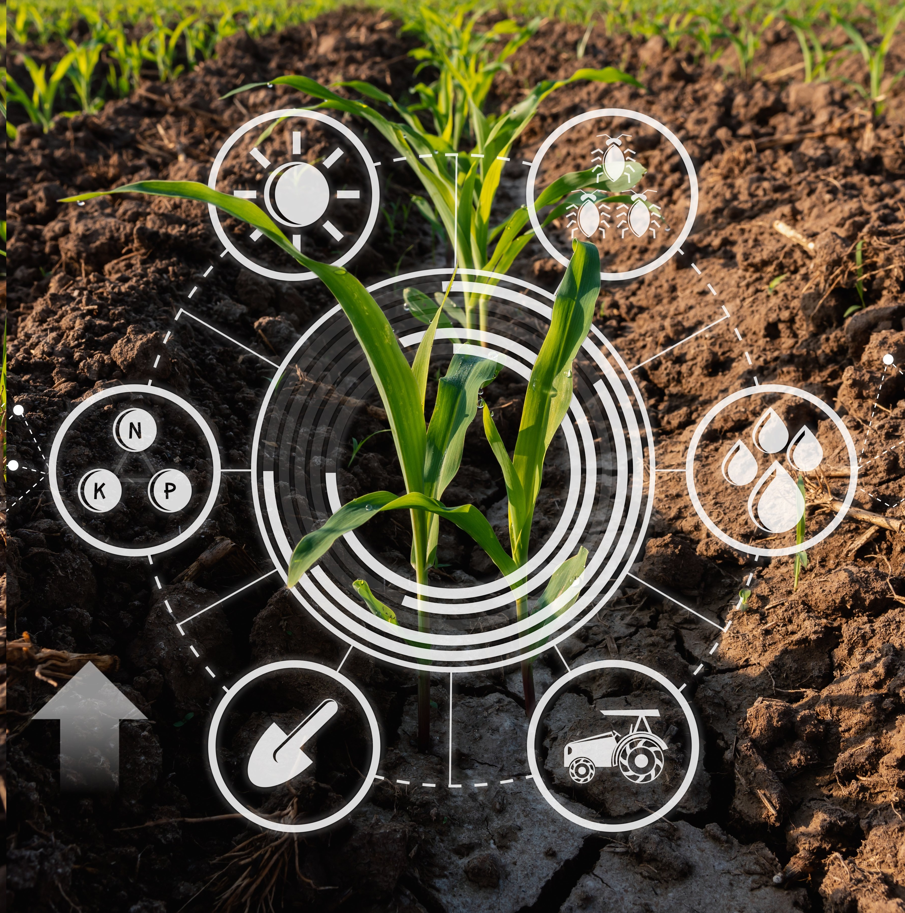

🧪 Curso de controle de qualidade CAFB 🧪
CAFB CQ
É fundamental o controle de qualidade justamente para garantir a competitividade do produtor no mercado, a segurança e satisfação dos consumidores ao atender as exigências dos mesmos.
Cabe ao produtor analisar cada fator do produto, como sabor, aparência, processo produtivo, entre outros.
Existem órgãos publicos que garantem a qualidade da produção, como a Anvisa, MAPA e o Ministerio da Agricultura.
- Análise do solo para adubação correta e fertilizantes registrados
- Priorizar o MIP e defensivos registrados na pulverização
- Seguir protocolo de higiene durante a colheita para evitar contaminação do produto
- Checar temperatura, umidade e segurança nas embalagens e veículos